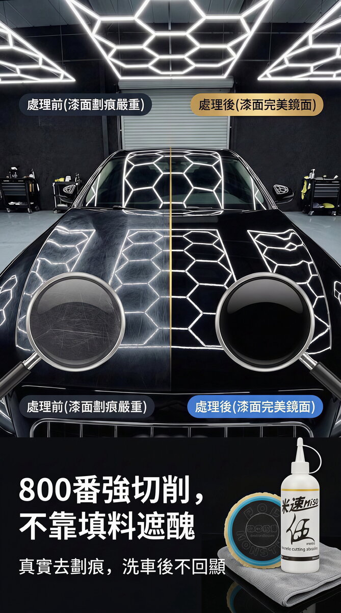
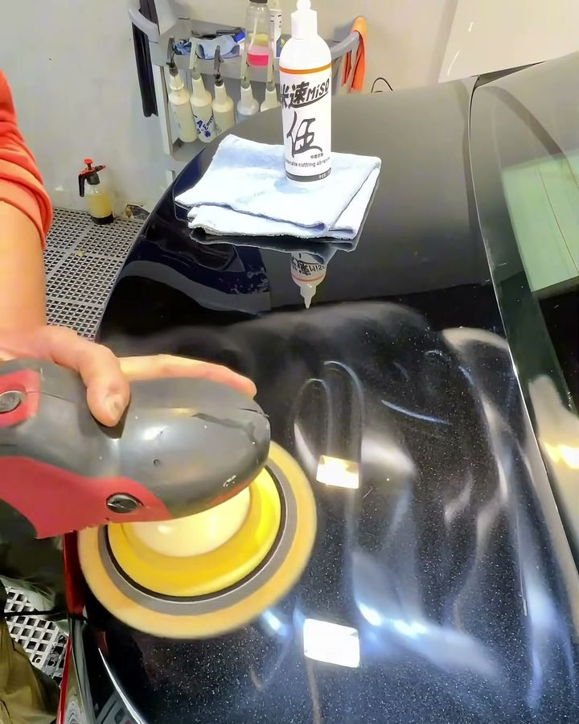

MISO Compound 3-Piece Set
MISO 80/600/1000 grit, three bottles in one set. You get everything from heavy cut to mirror finish in one buy, so you don't have to try them one at a time.
Add to cart → fill in your details → send your order on WhatsApp; we confirm on WhatsApp whether each item can ship to your country and what shipping costs, then you pay

Real footage
This still is from an application video on our Facebook page. The bottle on the roof is the MISO No.5 One-Step (600 grit) from the 3-piece set.
Product description
Paint full of swirl marks, or you polished it and you're still left with holograms and buffer trails — or you just don't want to buy each grit separately and trial-and-error your way through it. The MISO Compound 3-Piece Set groups three grits together: No.3 80 grit for heavy cut, No.5 600 grit for medium cut, No.10 1000 grit for the mirror finish, covering the whole range from heavy cut down to a 1000-grit mirror finish. All three are water-based, ready to use straight from the bottle with no dilution, and run on RO, GA, and DA machines.
Specs
- What's included
- MISO No.3 Heavy Cut (80 grit), MISO No.5 One-Step (600 grit), MISO No.10 Mirror Finish (1000 grit), three bottles total
- Grit
- 80 grit (heavy cut) / 600 grit (medium cut) / 1000 grit (mirror finish); with a wool pad, No.10 can cut up to 1500 grit
- Dilution ratio
- No dilution needed, use straight from the bottle
- Compatible surfaces
- Solid black, soft paint, hard paint, and plastic trim; works on all colors
- Not for use on
- For paint that's already aged and oxidized, look at it first before you decide: if the oxidation hasn't eaten through the clear coat yet, you can polish it back. If the oxidation has soaked all the way through the paint, polishing won't bring it back — at that point the paint itself is beyond saving, it's not a compound problem. If you're not sure about the paint's condition, ask first before going straight to a heavy cut.
- Compatible machines
- Works with RO, GA, and DA polishers
- Pads to pair with
- No.3 80 grit pairs with a heavy-cut wool pad; No.5 600 grit pairs with an ultra-fine pure wool pad (for solid black and piano black paint); No.10 1000 grit pairs with a mirror wool pad, then finish with a foam pad. This is a starting point, not the only way to do it. You can adjust the pad-and-grit pairing based on how it's turning out as you work — let the result on the paint decide your next step.
How to use it
- Clean the paint first and remove iron fallout, tar, and other contaminants, so they don't scratch the surface while you polish.
- Assess the paint's condition first to decide where to start: for deep scratches, heavy oxidation, restoring an old car, or accident repairs, start with the 80 grit heavy cut. If the paint damage is within 1000 grit, you can go straight to No.5 600 grit with its dedicated wool pad and finish in one step.
- For the heavy-cut stage, use No.3 80 grit with a heavy-cut wool pad to work out orange peel, deep scratches, and paint that needs a full correction.
- For the medium-cut stage, refine with No.5 600 grit; for fragile surfaces like solid black and piano black, pair it with an ultra-fine pure wool pad.
- For the finishing stage, use No.10 1000 grit for the mirror finish, then run a foam pad over it once more to bring up the shine.
- Between each pass and after finishing, wipe off the residue with a microfiber towel, check the paint under a light, and decide whether to move on to the next step.
Things to know
- Always clean contaminants off the paint before you start, so they don't scratch the surface.
- We recommend using it with the pads we specify for the best results and safety.
- "One-step polish" isn't cutting corners: assess the paint's condition first, and only finish in one step if the condition allows it. When needed, follow up with a fine foam pad.
- Solid black cars, piano black paint, high-gloss plastic B-pillar trim, and acrylic are extremely fragile materials. Their surface is more sensitive than delicate skin, so go even lighter on them.
- Follow the instructions, and test on a small, inconspicuous area first.
- For paint that's already aged and oxidized, look at it first before you decide: if the oxidation hasn't eaten through the clear coat yet, you can polish it back. If the oxidation has soaked all the way through the paint, polishing won't bring it back — at that point the paint itself is beyond saving, it's not a compound problem. If you're not sure about the paint's condition, ask first before going straight to a heavy cut.
- We don't currently have a full ingredient list, pH value, or Safety Data Sheet (SDS) available to share. If you have concerns about the ingredients, please ask before you buy.
- Polishing kicks up dust and product spatter. Wear gloves and eye protection and keep the area ventilated. If it gets in your eyes, flush with plenty of water and see a doctor.
FAQ
One bottle of MISO No.5 One-Step (600 grit), our ultimate pick for solid black paint, plus one RO custom wool pad.
Good for moderate swirl marks and light-to-moderate scratches. "One-step polish" means it can correct the paint and bring up a mirror finish in a single step, so you don't need another grit to finish — it's the most efficient option.
It's suited to users with basic polishing know-how. For your first time, start on a small area on a corner of the hood, get a feel for the machine and pressure, then move on to the rest of the car.
Works with RO, GA, and DA polishers. Best results come from the wool pad included in the set — they're already matched.
Application guide
Similar products


MISO Compound 3-Piece Set
If you're ready to buy, add it to your cart and send your order on WhatsApp. If you're not sure it's right for your car, ask us on WhatsApp first before you order.